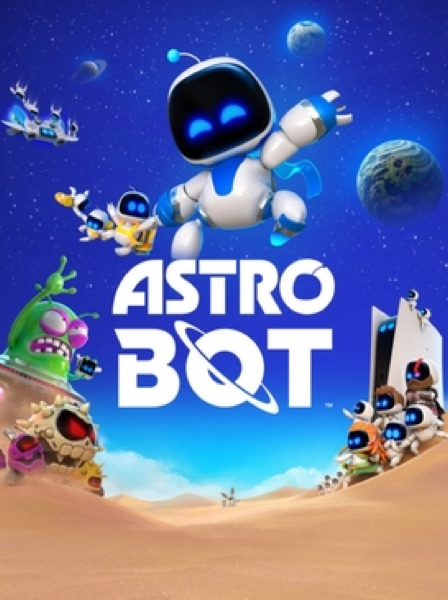

Platformer · 2024
Astro Bot
Pure toy-box delight and the best haptics on any controller.

Cover: Wikipedia: Astro Bot
Facts
- Released
- 2024-09-06
- Genre
- Platformer
- Category
- Platformer
- Platforms
- PlayStation
- Developers
- Team Asobi
- Publishers
- Sony Interactive Entertainment